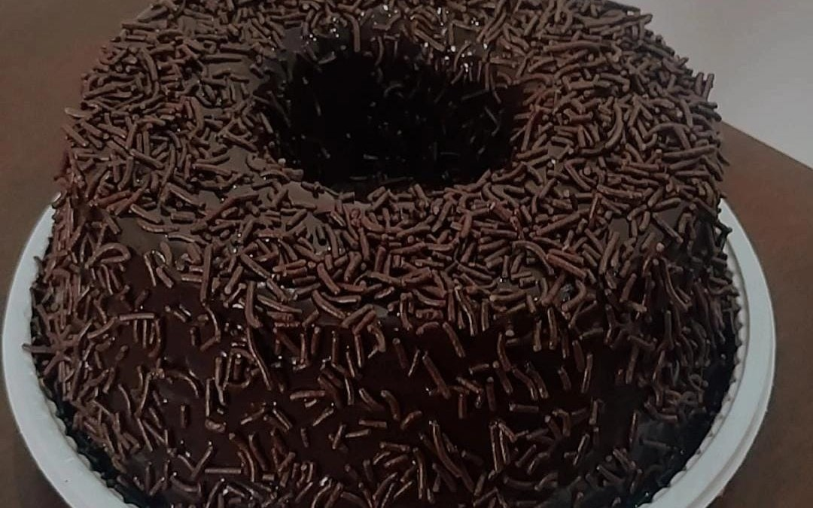

01
Abrir ↗
01
Abrir ↗
RESTAURANTE / PREMIUM
AURA Restaurante
Presença digital premium para gastronomia contemporânea, com foco em narrativa, confiança e reserva.
Daniel Luis dos Santos
Crio landing pages e experiências digitais com direção visual, desenvolvimento e foco em conversão, transformando ideias em produtos claros, desejáveis e prontos para gerar ação.
Sou AI Developer e crio landing pages e experiências digitais unindo direção visual, desenvolvimento e estratégia de conversão.
Meu processo começa na ideia e termina em uma experiência digital pronta para funcionar. Combino direção visual, tecnologia e experimentação para transformar conceitos em interfaces reais, responsivas e pensadas para gerar ação.
Uma seleção de landing pages e experiências digitais criadas para diferentes negócios, com atenção à direção visual, desenvolvimento, experiência e conversão.
01
Abrir ↗
RESTAURANTE / PREMIUM
Presença digital premium para gastronomia contemporânea, com foco em narrativa, confiança e reserva.

02 Abrir ↗CONFEITARIA / CONVERSÃO
Catálogo com produtos, pedidos por WhatsApp, galeria e FAQ em uma jornada simples e direta.
 03
Abrir ↗
03
Abrir ↗
BEAUTY / PREMIUM SERVICE
Experiência para serviço de beleza com estética premium, apresentação de serviços e caminho claro para agendamento.
 04
Abrir ↗
04
Abrir ↗
BARBERSHOP / PREMIUM
Posicionamento premium para barbearia, com serviços, equipe, galeria e pontos de contato.
 05
Abrir ↗
05
Abrir ↗
FOOD / LOCAL BUSINESS
Página comercial para negócio local, com oferta, cardápio, conteúdo e caminhos de pedido.
 06
Abrir ↗
06
Abrir ↗
WELLNESS / LOCAL BUSINESS
Presença digital para negócio de bem estar com foco em confiança, informação e contato.
Web
Build
Tools
Foco
Transformo uma ideia em uma experiência digital completa, da direção visual à implementação. Trabalho com velocidade, experimentação e atenção aos detalhes para chegar a uma página pronta, responsiva e pensada para conversão.
Entendo a proposta, o público e a ação que a página precisa gerar.
Transformo conceitos em interfaces reais, combinando velocidade de produção, experimentação e desenvolvimento.
Reviso hierarquia, responsividade, interação e detalhes que fazem a experiência parecer pronta.
Organizo a experiência para facilitar entendimento, desejo e próxima ação.
Vamos conversar